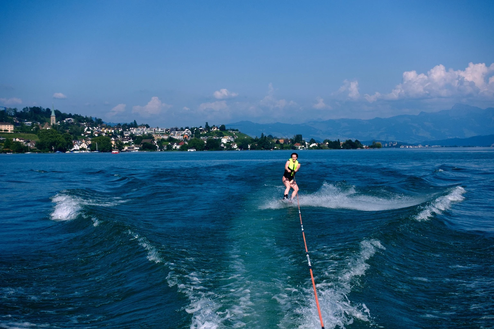

Kennenlernen
Wir besprechen deine Ziele, deinen Alltag und deine bisherigen Erfahrungen.
Coaching & Angebote
Dein Training beeinflusst deinen Alltag. Dein Alltag prägt deine Ernährung und Erholung. Deshalb betrachten wir diese Bereiche gemeinsam.
Vom einzelnen Trainingsplan bis zur Trainingsperiodisierung über zwölf Monate – abgestimmt auf deine Ziele und deinen Alltag.
Lebensmittel, Gewohnheiten und Supplemente sinnvoll zusammenbringen.
Für Frauen und Männer: Wohlbefinden in Alltag, Beruf und Training. Mit Blick auf Regeneration, Supplemente und hormonbezogene Lifestyle-Fragen.
So arbeiten wir zusammen
Wir besprechen deine Ziele, deinen Alltag und deine bisherigen Erfahrungen.
Wir schauen auf Training, Ernährung, Erholung und deine persönlichen Bedürfnisse.
Du erhältst eine auf dich abgestimmte Planung oder Beratung. Umfang und Kosten klären wir vorab.

FIND YOUR BALANCE.
Deine Ziele dürfen sportlich sein. Genauso wichtig ist, wie sich dein Training mit deinem Alltag, deiner Freizeit und deiner Erholung verbinden lässt.
Dein nächster Schritt
Erzähl mir, wo du stehst und was du verändern möchtest.
Beratungsgespräch anfragen ↗